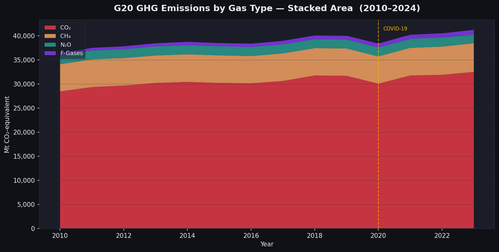
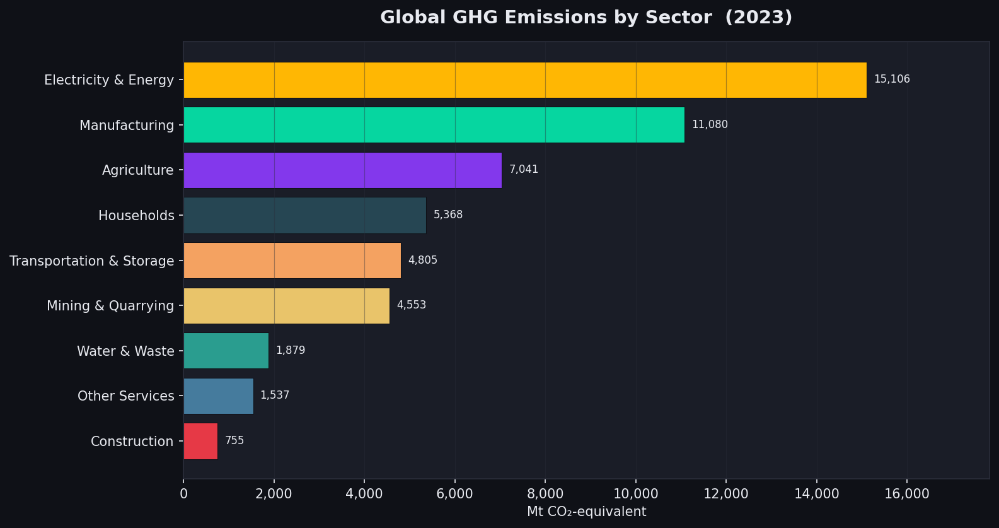
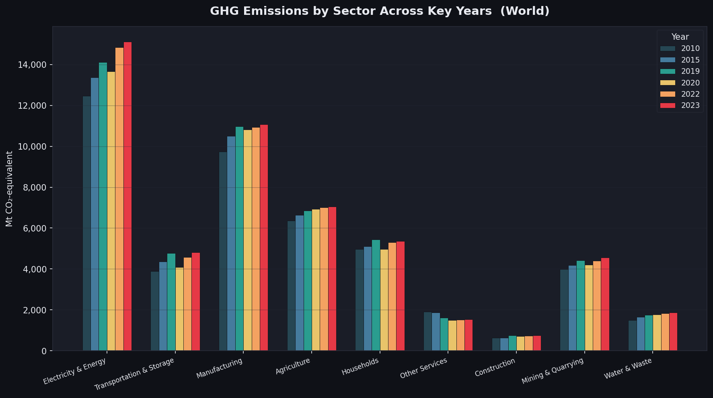
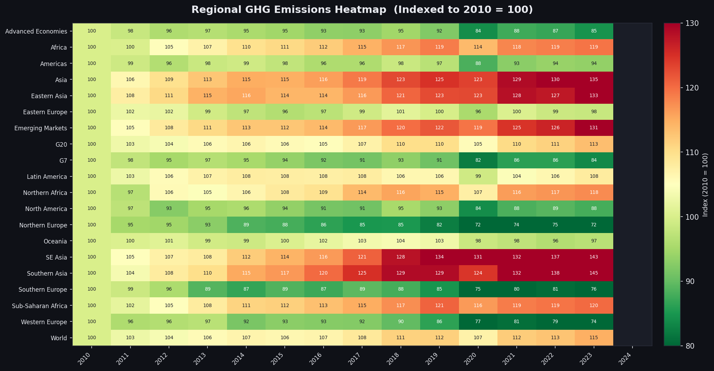

Explore how individual sectors and gas types contribute to global emissions, and how the COVID-19 shock played out at quarterly resolution.

Looking at the areas on the chart, C02 makes up a majority of the gases that get into the atmosphere. After that, CH4, N20, and F gases make up the rest in order of largest to smallest. This helps illustrate that to make an impact on GHG emissions, technology should be focused more around mitigating or capturing these C02 gases, because that is the largest piece.


These figures give us a deeper perspective on the industries that make up a large amount of GHG emissions. It is not a surprise that energy is the largest contributor. After that manufacturing and agriculture are the next largest contributors. What is interesting is that these industries are prevalent in Asia and emerging markets, and that makes sense when you compare these charts with the heat map below!

This heatmap helps emphasize the regions where most of these gases get emitted. We can see from the red and dark red areas that emerging markets as well as parts of Asia are responsible for the most GHG emissions. This makes protecting the planet more difficult because it will require cooperations from many different countries and political administration. Diplomacy and international cooperation will be key to help solve this problem.